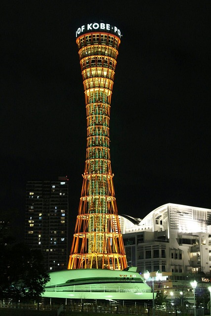

Oh dear, it's already evening.
And I still wanted to write a postcard and then go out to eat some
delicious Kobe beef....let's go!

As the tower shows you, I'm now in Kobe. You can find many more
landmarks of the city in the Japanese characters. If you hover over them,
everything will get bigger.
My hunger is also huge.
I'm going to eat now.